Martin Galilée
Ingénieur recherche interdisciplinaire
Sciences de la soutenabilité et au-delà
Mon parcours m'a apporté beaucoup d'expériences différentes, dans différents domaines. Doctorant chargé de cours, programmeur d'expériences de psychologie aux USA, médiateur scientifique auprès de jeunes curieux, journaliste du monde académique, spécialiste de la cognition de la communication visuelle...
Je mets maintenant mes connaissances et expériences au profit des sciences en tant qu'ingénieur recherche, particulièrement en sciences de la soutenabilité et pour le soutien à l'interdisciplinarité.
 Télécharger mon CV
Télécharger mon CV

Un exemple de mon travail de journaliste : Pollutions Polaires (pdf), paru dans L'Actualité Nouvelle-Aquitaine en 2019. Photo David Grémillet.

Refonte de schéma scientifique en format vectoriel pour une présentation auprès d'un ministère. Schéma IPREM.

Parus Polygonae, une mésange transformée en logo vectoriel. Une bonne base pour un logo de laboratoire ?

Création d'icône vectorielle pour illustrer un site web ou une présentation.
Représentation métaphorique interactive utilisée dans une expérience de psychologie cognitive sur la consommation d'énergie.
L’imprimerie, 2019, portrait réalisé avec l’association Dealers de Science sur le thème de la culture scientifique et technique.
Un outil pédagogique à ambiance scientifique : le tableau périodique des styles de bière. Tout en technologie web, codé à la main. Incompatible mobile.
Diapositives sur la pollution plastique dans les océans présentées au ministère de la Transition écologique.
 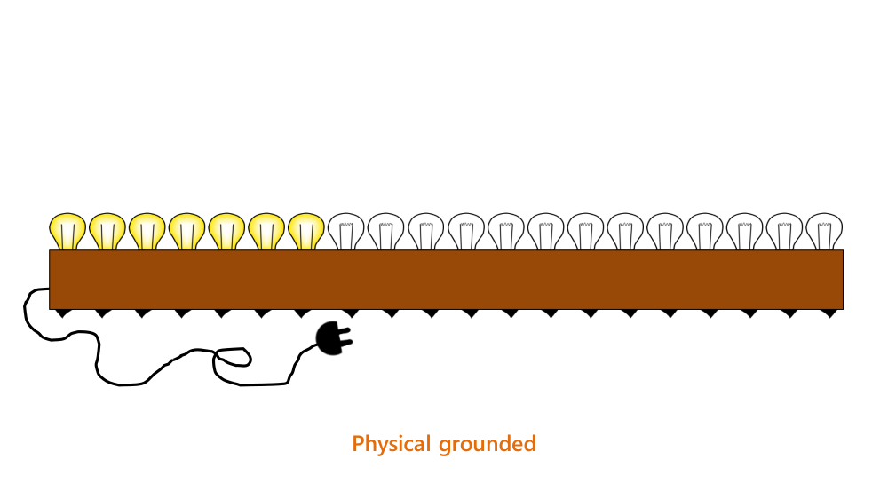
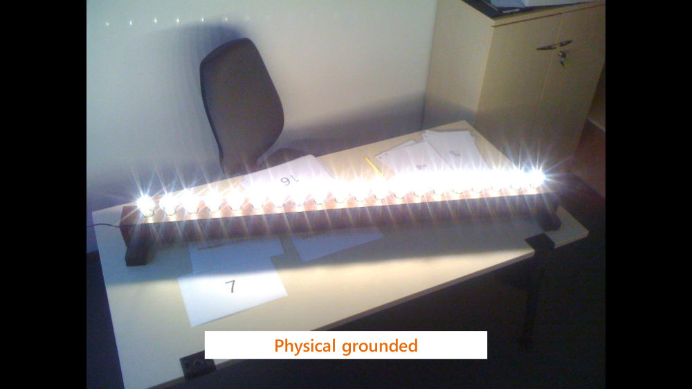
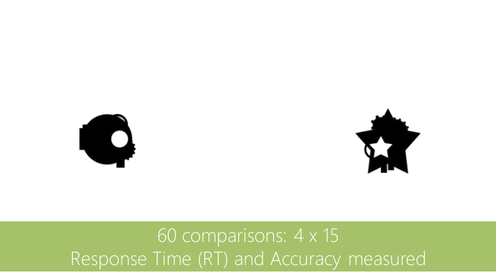
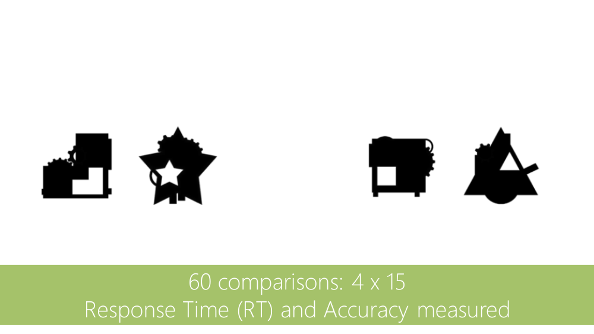
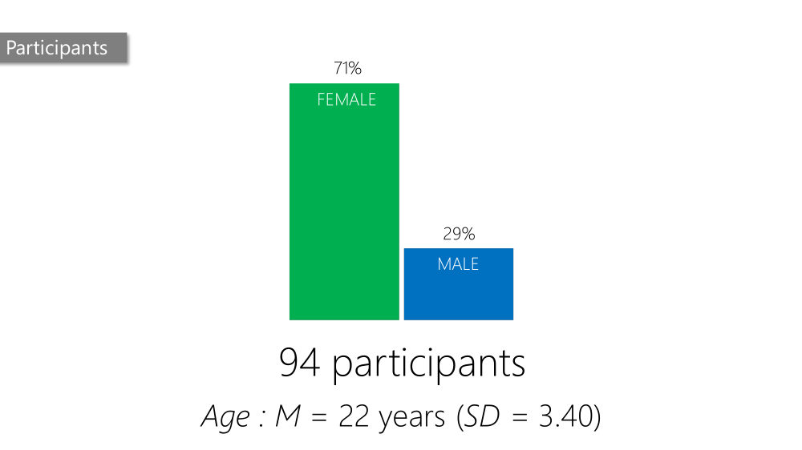
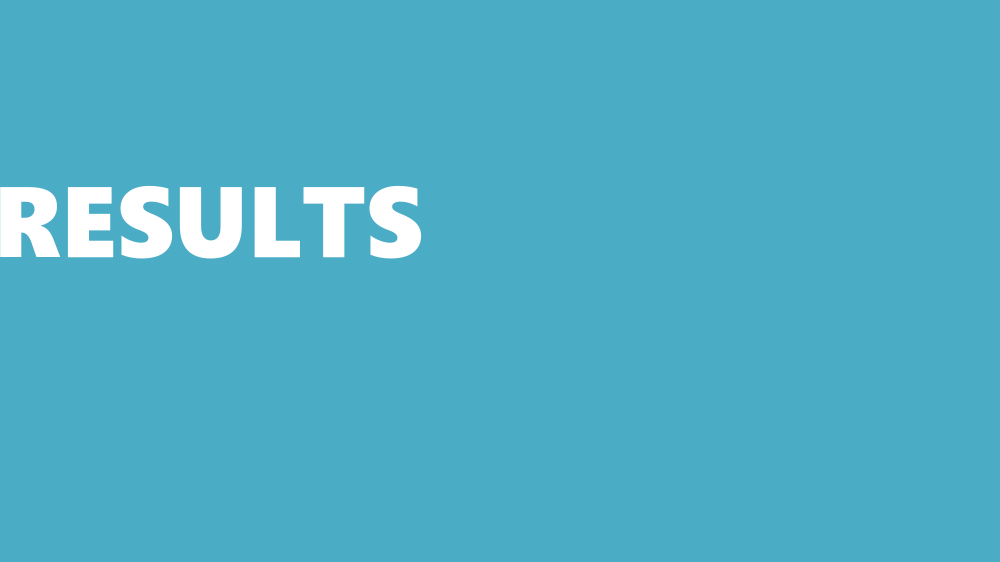
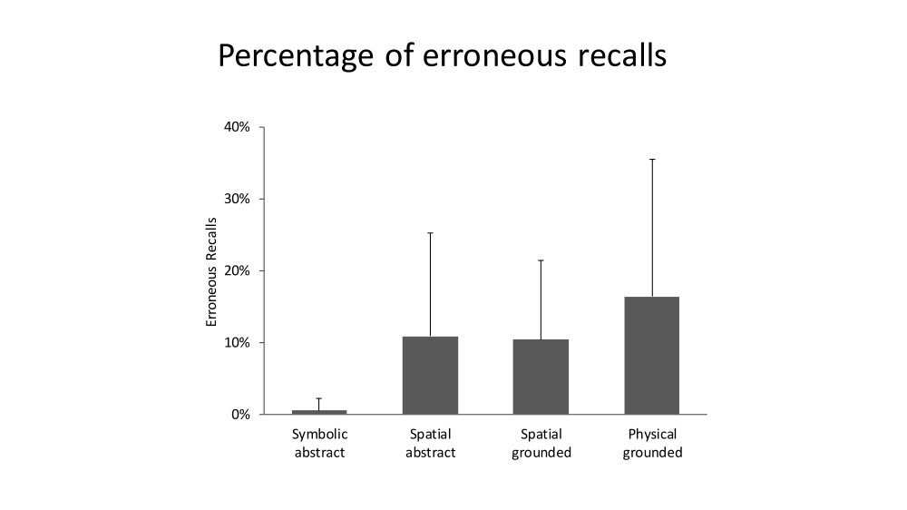
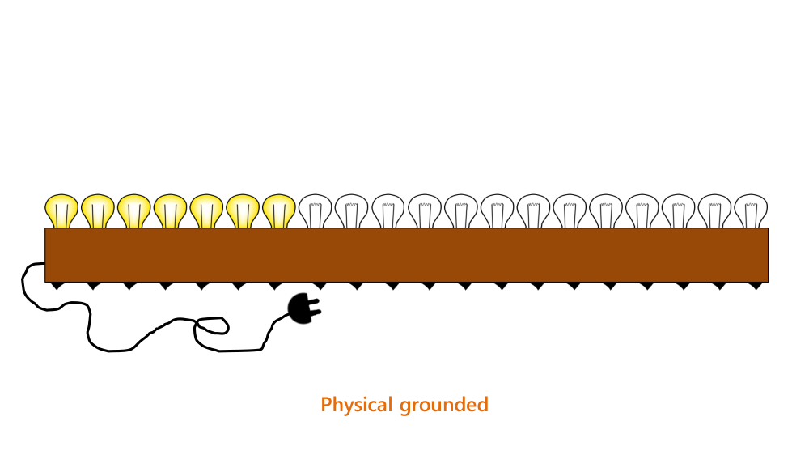
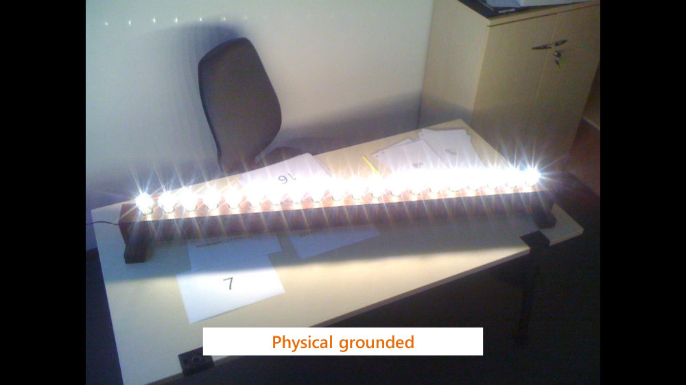
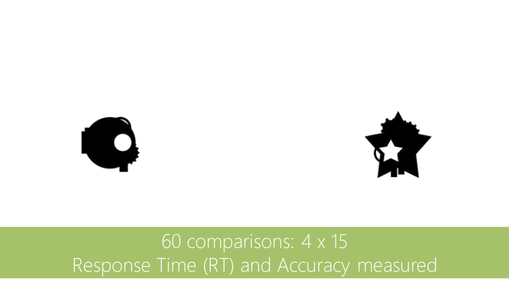
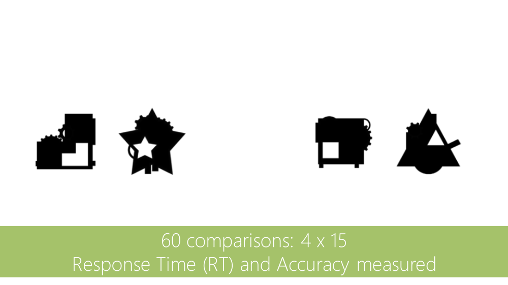
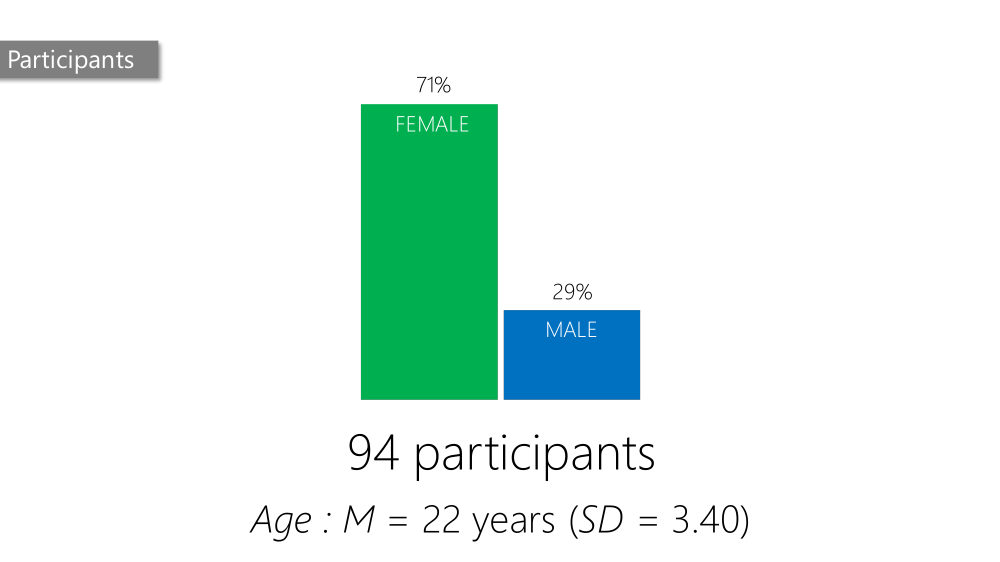
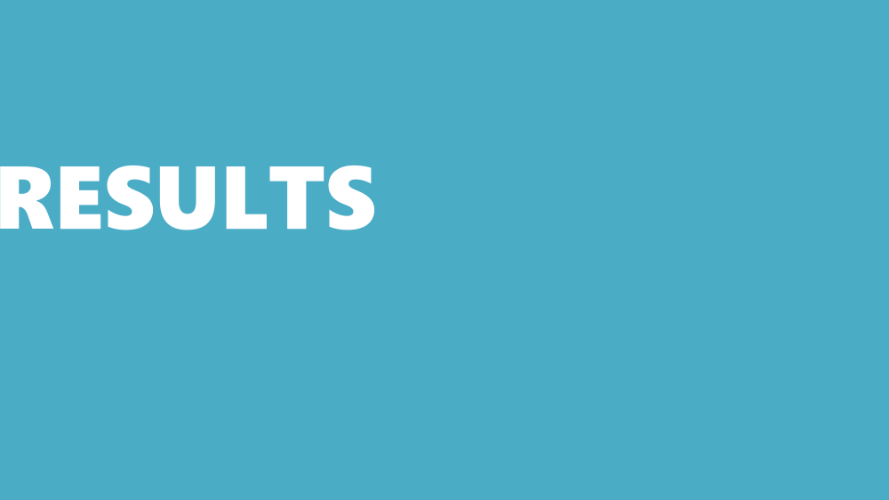
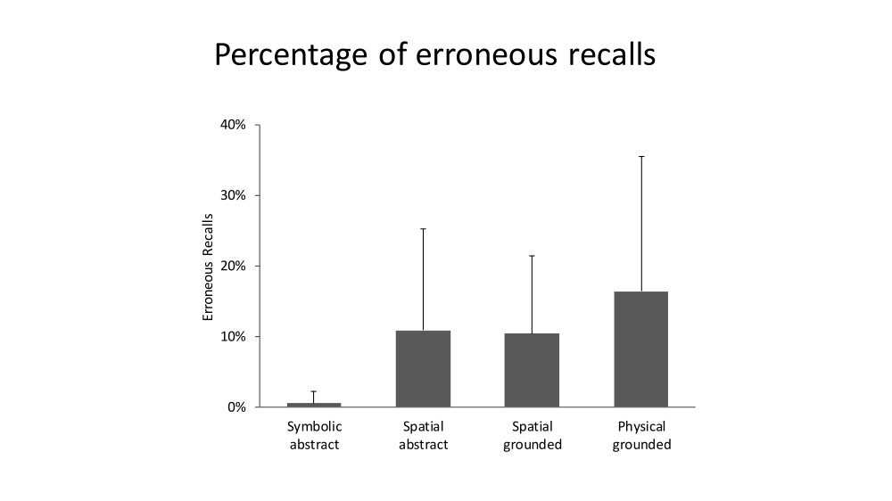


Diapositives de ma soutenance de thèse en sciences de l'éducation appliquées à la soutenabilité, sur le sujet de la maîtrise de la consommation d'énergie.